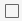
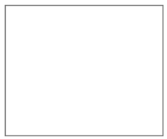

Drawing a square
You can add a new shape to your design using a square.
You will be able to draw a basic shape in your project in Adobe XD.
You can quickly draw squares using the Rectangle tool - a drawing tool located on the left toolbar.

- Select the Rectangle tool  in the upper left.
- Hold down the Shift key
- Drag the square diagonally until the it is the desired size.
As a result after following the steps above you will have drawn a square in Adobe XD.
